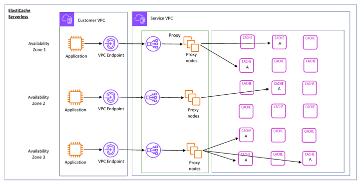

Amazon ElastiCache
Amazon ElastiCache is a fully managed, in-memory data store and caching service provided by Amazon Web Services (AWS) that is architected to deliver sub-millisecond latency for high-throughput, real-time applications. By decoupling the high-speed data access layer from traditional disk-based databases, ElastiCache allows developers to significantly reduce I/O overhead and minimize the load on primary data sources like Amazon RDS or Aurora. The service is fully compatible with popular open-source engines, including Redis OSS, Memcached, and the more recent Valkey, enabling seamless migration with minimal to no code changes.

Figure 1: Amazon ElastiCache example architecture.
Technically, ElastiCache operates as a distributed system that can be deployed in two primary configurations: node-based clusters or a serverless model. In a node-based setup, users have granular control over instance types and sharding, with support for up to 250 shards and 170.6 TB of in-memory data in cluster mode. For high availability, ElastiCache for Redis supports Multi-AZ deployments with automatic failover, where it maintains a primary node and up to five read replicas across multiple Availability Zones to ensure 99.99% availability. The serverless option further abstracts infrastructure management by automatically scaling compute and memory resources in response to application demand, eliminating the need for manual capacity planning.
Beyond simple key-value caching, ElastiCache supports complex data structures—such as sorted sets, bitmaps, and hyperloglogs—making it an ideal choice for specialized use cases like real-time leaderboards, session management, geospatial indexing, and pub/sub messaging. Advanced features like Global Datastore facilitate fully managed cross-region replication, allowing for local, low-latency reads in globally distributed architectures. By automating administrative tasks such as software patching, failure recovery, and backups, ElastiCache enables engineering teams to focus on optimizing application logic while maintaining an enterprise-grade, secure (VPC-isolated and IAM-authenticated) caching environment.